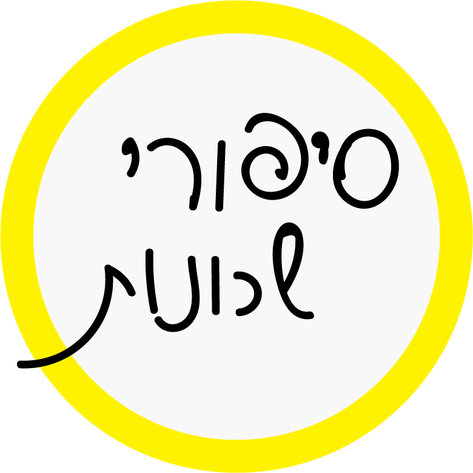

 סיפורים מהמטבח פלורנטין "קיוסקו" "דדה" הכריך של הדודות נווה צדק גלידה "אניטה" המטבח התימני של ענת שכונת התקווה "סאלוף" "מלבי אקספרס" סיפורי קהילה פלורנטין שיין- אמן ומעצב סיפורה של סימה קואופרטיב "מקומי" נווה צדק גילדת הצורפים דיאנה- שגרירה של שלום שכונת התקווה האגוס- דייר חדש "על הרצף" סיפורי רחוב פלורנטין רחוב מזרחי רחוב פרנקל שדרות וושינגטון נווה צדק רחוב שלוש רחוב פינס שכונת התקווה סמטת השוק רחוב האצ"ל" מפה אינטראקטיבית